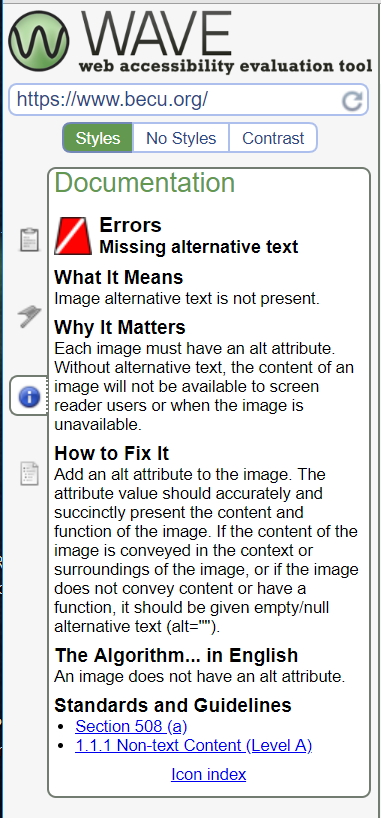
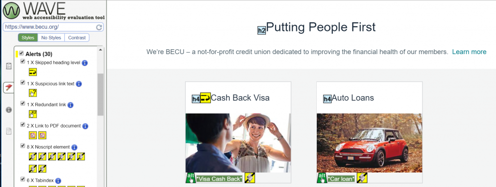

For this week’s project on website accessibility, the page I’ve chosen to evaluate is BECU. This website is where members of BECU can check their banking accounts online, as well as apply for loans and credit cards. I chose to use the ‘Easy Checks‘ guidelines set forth by w3.org which reviews the page title, image text alternatives (alt text), text headings, contrast ratio, interaction including keyboard access & visual focus, forms, labels and errors, multimedia alternatives and a basic structure check. I also used the WAVE tool that analyzes pages for usability. Just to get a feel of how usable the page might be, I decide to run it through the WAVE tool for analysis. I’m not sure if this is common for many pages, but BECU’s website seems to have a LOT of accessibility errors:

Luckily, WAVE breaks down each error and explains why it is important and how to fix it. For example, the first thing listed under the ‘Error’ section is that an image is missing alternative text. This will cause the screen reader to not be able to read it and describe the image to the user. Here is the recommended fix from WAVE:
Like I said previously, according to WAVE BECU’s site has many accessibility errors which makes me question just how disabled/visually impaired are supposed to use this site? Hopefully the W3 WAI Easy Checks can help us look into this further.
Page Titles
- The page titles are shown in the title bar, in the browsers tabs with multiple pages open, shows up in search engine results and can be used to bookmark the page.
- BECU is coded in the HTML markup under <title> in the heading

Image Text Alternatives (alt text):
WAVE only reported back 1 image with missing alt text on the main page, which is the image for the ‘Free Financial Health Check’. The image is a clip art type book which I’m not sure lends a whole lot of meaning to the link, however I think if they wanted to be WAI compliant, they should add an alt tag with a short description of the image.

Headings:
WAVE reported 1 skipped heading level in the ‘Cash Back Visa’ section which has an <h4> heading and the section above it has an <h2> heading. I’m not sure if this is the cause of the flag since there are other similar sections under the <h2> heading but it is my best guess since there is no <h3> heading between them. To me this is something that could be kept if it works for the page and the screen readers.
Contrast Ratio:
Overall the BECU site has great contrast without making the whole page black and white. The page background is white and uses black and red lettering to stand out. There are also sections of the page that have a black background with white lettering. I think the site does a great job at making the text on their page stand out while still going with their company colors and theme.

Resize Text:
I zoomed in on this page as much as I could to see how much the text could be enlarged. The page is very responsive and stays intact while making the text large and easy to read.

Keyboard Access and Visual Focus:
The page doesn’t have any drop down type menus, however I was able to easily tab through each section and select links to follow.
Moving, Flashing or Blinking Content
The only moving content on the BECU homepage is the slow moving carousel that contains images with links to other features on their site. According to W3’s WAI criteria, the carousel has no flashes or blinks, auto-updated information or has movement that lasts less than 5 seconds. I think this carousel should be safe for those with epilepsy.
Multimedia Alternatives:
BECU’s homepage does not contain any multimedia such as audio or videos.
Basic Structure Check:
After linearizing the page like W3 recommends, the content makes sense in how it was moved since the page is responsive. However I couldn’t get my computer to turn off the CSS styles so I was not able to test that part.
The Findings:
In comparison between the WAVE analysis and the ‘Easy Checks’ done from the W3 WAI guidelines, the BECU site is much more usable than one is led to believe with WAVE since it has so many flags. However, I do think that there are some things that are good to look over with that report, such as the headings to make sure they match and fall in the right order. I don’t think that BECU has too much more to work on their page besides fixing the one alt tag.